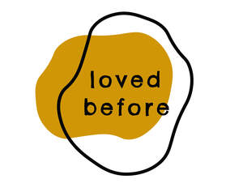

Trade Mark Journal No.2025/037 12 September 2025
UK00004247913 12 August 2025 (25,28,35,41)

No claim is made to any background colour. The white shown in the uploaded image is due to jpeg file limitation only. The background (all white in the logo) is transparent.
- Class 25
- Teddies; Teddies [undergarments]; Teddies [underclothing]; T-shirts; Tee-shirts; Short-sleeved T-shirts; Printed t-shirts; Hoodies; Beanies; Sweatpants; Tracksuits; Shorts; Hats.
- Class 28
- Toy dolls; Toy playsets; Toy figurines; Toy robots; Toy furniture; Toys; Toy cars; Toy vehicle playsets; Toy figures; Toy vehicles; Toy trains; Toy animals; Toy models; Toy trucks; Toy action figurines; Toy figure playsets; Toy dogs; Toy sets; Toy fish; Toy hats; Toy birds; Clothing for toy figures; Toy houses; Toy model cars; Toy plants; Plush toys; Modeled plastic toy figurines; Collectable toy figures; Model toys; Stuffed toy animals; Toy flowers; Cuddly toys; Pet toys; Plastic toys; Stuffed toys; Dog toys; Positionable toy figures; Toy action figures; Plush dolls; Stuffed and plush toys; Stuffed plush toys; Plush stuffed toys; Plush toys with attached comfort blanket; Stuffed bean-filled toys; Soft toys; Fluffy toys; Stuffed toy bears; Stuffed dolls; Soft toys in the form of animals; Stuffed animals [toys]; Teddy bears; Clothing for teddy bears; Conveyances for teddy bears; Christmas dolls; Stuffed puppets; Doll clothing.
- Class 35
- Retail services in relation to toys.
- Class 41
- Toy rental.
Loved Before Ltd